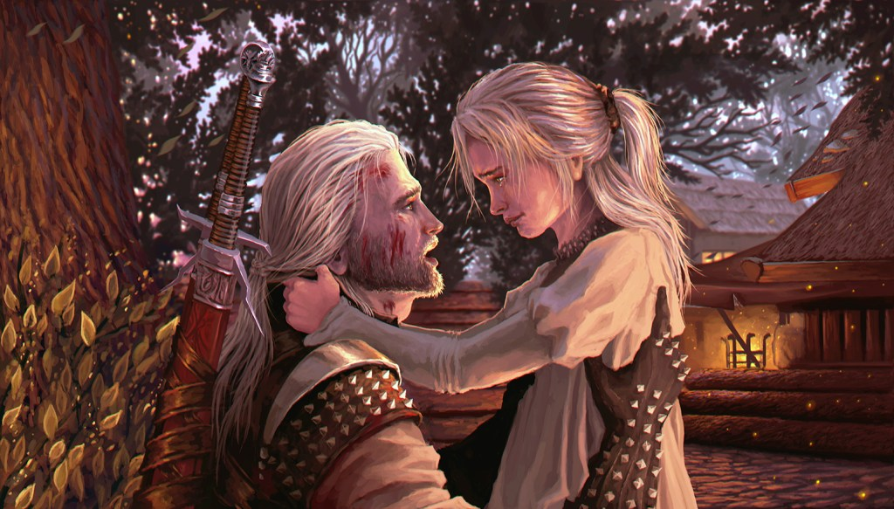
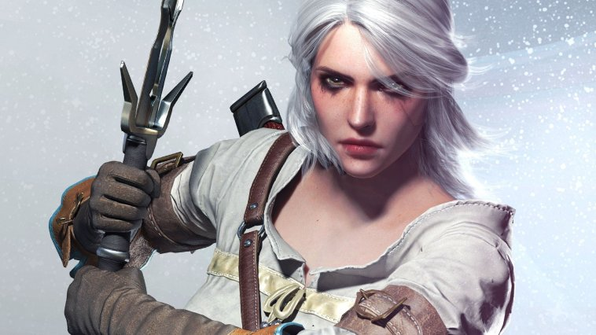

Cirilla Fiona Elen Riannon, better known as Ciri, was born in 1252 or 1253, and most likely during the Belleteyn holiday. She was the sole princess of Cintra, the daughter of Pavetta and Emhyr var Emreis as well as Queen Calanthe's granddaughter. After Geralt of Rivia helped lift Duny's curse, Duny asked what reward the witcher would like and Geralt proclaimed the Law of Surprise, as it turned out Pavetta was pregnant with Ciri, unbeknownst to Duny.
Geralt and Ciri meet for the first time in the Sword Of Destiny
In the books we follow a young ciri trying to avoid those who are pursuing her which include her father the Emperor of Nilfgaard Emhyr Var Emreis, The Lodge of Sorceresses and the Witch Vilgefortz as well as his allies Leo Bonhart and Stefen Skellen. At the end of lady of the lake Geralt kills Vilgefortz and Ciri kills Leo Bonhart, The Emperor leaves Ciri and uses an imposter as a pawn. Geralt and Yennefer die and Ciri ends up traveling to the real world in King Arthur's england.
The games take a different approach, since the events of the games is not cannon Geralt and Yennefer survive and Ciri is being persued by The Wild Hunt, a powerful army of Aen Alle Elves trying to take control of the world using Ciri's Elder Blood powers. Depending on the players choices Ciri can end up dead or alive at the end of the game.
Ciri in the Witcher 3